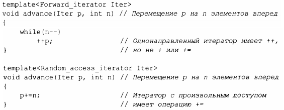
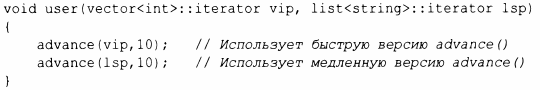

⇐7.2.1 Применение концептов 7.2.3 Корректный код⇒
Как только мы правильно определили шаблоны с их интерфейсами, мы можем выполнять перегрузку на основе их свойств, как делали это для функций. Рассмотрим немного упрощенную функцию стандартной библиотеки advance(), которая передвигает итератор(§ 12.3):
Компилятор выберет шаблон с наиболее строгими требованиями, которым удовлетворяют аргументы. list поддерживает однонаправленные итераторы, но не итераторы с произвольным доступом, которые поддерживает vector, поэтому мы получаем
Подобно другим перегрузкам, это механизм времени компиляции, не влекущий накладные расходы времени выполнения. Если компилятор не находит наилучший вариант, он сообщает об ошибке неоднозначности. Правила перегрузки на основе концептов намного проще, чем правила общей перегрузки (§ 1.3). Рассмотрим сначала единственный аргумент для нескольких альтернативных функций.
Для выбранной альтернативы должны выполняться следующие условия: